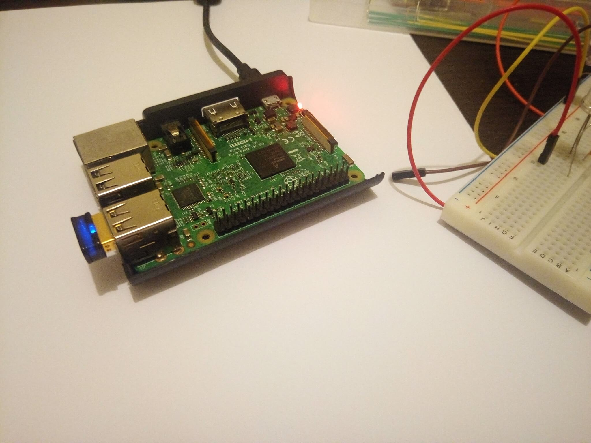
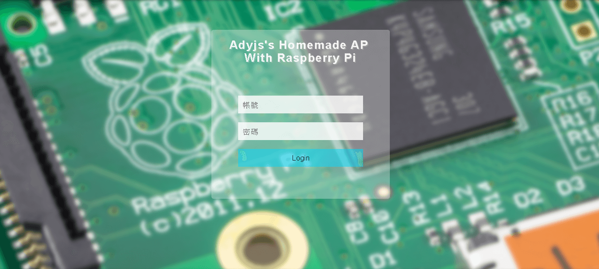
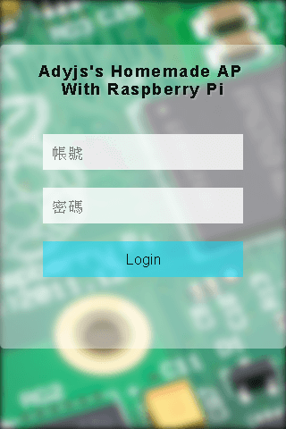
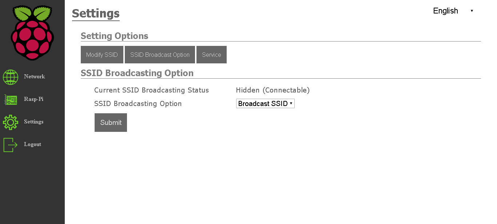
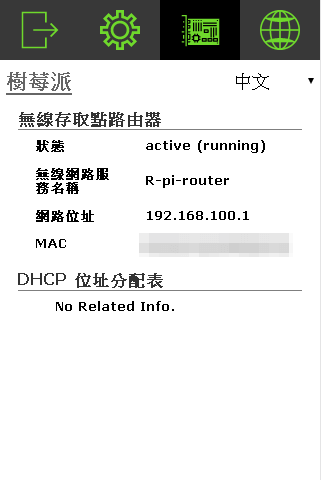

你好，我是 Adyjs
這個網頁是我用來介紹我用樹莓派做的一個小專題，以及我學到了什麼而這個作品主要就是使用樹莓派本身的硬體模組、作業系統 iptables 等相關功能、配合第三方的開源軟體所呈現出來的應用。關於用樹莓派作 AP Router 用來延伸 devices 跟 ISP gateway 連線距離，在網路上已經有很多相關的教學及進階應用， 但可能因為硬體版本，作業系統更新或是時間久遠，等等的原因，而導致有些教學文章的內容已無法對應使用在經過我多方的探索閱讀以及好幾次的測試之後，我也寫了一篇新手版的 Raspberry Pi 3 model B AP Router 的 configuration 筆記，這是我用來練習、學習 Linux 作業系統功能設定的小專題
實作內容大概就分四個部分：
- 第三方軟體的安裝、配置
- 設定 WiFi 模組及組態，包括 SoftAP 及 DHCP server
- 設定 iptables 及 forwarding 相關設定
- Router 本身的 apache 網頁伺服器，建置前後端網頁內容，使用 PHP shell_exec() 函式配合 Bash shell 來呈現系統的相關資訊及設定
Pi 本體
Pi-router 相關硬體及組態對應圖

網路拓樸圖

系統登入畫面 - 桌面版
系統登入畫面 - RWD 版
系統操作畫面 - 桌面版
系統操作畫面 - RWD 版
在接觸樹莓派之前，並不清楚 Linux 如何使用，沒有網路理論知識，更不知道系統相關的工具如何使用，為了做出這個小專題，讀了 TCP/IP illustrated，建立網路概論的基礎，也開始學習作業系統的理論課程及實際去基礎運用，之後我的目標是進階到寫 driver 及 kernel
學到現在，開始對於 GNU/Linux 有一些基礎的使用能力，會寫一些 BASH shell script，例如 : Ping LAN 端 devices 的 shell script
也越來越習慣在 Ubuntu 上，直接用 Vim 來寫程式，配合 GCC、GDB、makefile 的 GNU 工具來開發 C 語言程式